Chapter 13 Predictive Analytics
13.1 Learning Objectives
By the end of this chapter, you will be able to:
- Understand the predictive analytics workflow
- Split data into training and testing sets
- Perform cross-validation for robust model evaluation
- Use appropriate evaluation metrics for different problem types
- Build classification models (logistic regression, decision trees)
- Build regression models for prediction
- Compare multiple models systematically
- Identify and prevent overfitting
- Apply predictive analytics to sport scenarios
- Leverage AI tools to enhance predictive modeling
13.2 Introduction
Predictive analytics uses historical data to forecast future outcomes. Unlike descriptive analytics (what happened?) or clustering (what groups exist?), predictive analytics answers: What will happen?
13.2.1 Sport Analytics Applications
- Win Probability: Predict game outcomes before they happen
- Player Performance: Forecast future statistics
- Injury Risk: Identify players at high injury risk
- Recruitment: Predict college recruit success
- Attendance Forecasting: Predict ticket sales
- Contract Value: Estimate fair player salaries
13.2.2 Classification vs. Regression
Classification: Predict categorical outcomes (Win/Loss, Make Playoffs/Miss Playoffs)
Regression: Predict numeric outcomes (Points scored, Attendance, Salary)
13.2.3 The Overfitting Problem
Overfitting is the single biggest danger in predictive analytics. It occurs when a model learns the noise in training data rather than the underlying pattern.
What is overfitting?
Imagine teaching a student to recognize winning basketball teams. If they memorize “Team A beat Team B on January 15th when it was 42°F and Player #23 had a headache,” they’ve overfit—they’ve learned irrelevant details instead of general patterns like “teams that shoot efficiently tend to win.”
Example:
An overfit model might discover: “UNF always wins when: - Player #23 scores exactly 18 points - On Tuesdays - In January - Against teams wearing blue jerseys”
This pattern might exist in your training data by pure chance, but it won’t help predict future games!
Signs of overfitting:
| Indicator | What it means |
|---|---|
| Training accuracy >> Test accuracy | Model memorized training data |
| Very complex model | Too many predictors for amount of data |
| Perfect training performance | Red flag: too good to be true |
| Poor performance on new data | Model doesn’t generalize |
Why train/test split matters:
By evaluating on data the model has never seen, we detect overfitting before deploying the model. If test performance is much worse than training performance, the model overfit and won’t work in the real world.
Real-world consequences: - A player prediction model works great on past data but fails on current season - A win probability model is 95% accurate on training data but only 55% accurate in actual games - Management makes decisions based on a model that doesn’t actually work
Prevention strategies:
- Use train/test splits (always!) - Never evaluate on training data
- Cross-validation - Test on multiple splits of data
- Regularization - Penalize overly complex models
- Simpler models when possible - Occam’s razor applies
- More training data - Harder to overfit with lots of data
- Feature selection - Don’t include every possible variable
The golden rule: A model that performs perfectly on training data is probably useless. We want models that generalize to new, unseen data.
13.4 Train/Test Split
Critical concept: Never evaluate a model on the same data used to train it!
13.4.1 Why Split Data?
library(ggplot2)
library(dplyr)
# Create sample data
set.seed(2024)
games <- data.frame(
game_id = 1:100,
points_for = round(rnorm(100, 75, 10)),
points_against = round(rnorm(100, 72, 10)),
three_pt_pct = round(rnorm(100, 35, 5), 1),
turnovers = round(rnorm(100, 14, 3)),
result = sample(c("Win", "Loss"), 100, replace = TRUE, prob = c(0.6, 0.4))
)
# Make result more realistic (more wins when scoring more)
games$result <- ifelse(games$points_for > games$points_against + rnorm(100, 0, 5),
"Win", "Loss")
# Convert to factor for modeling
games$result <- factor(games$result, levels = c("Loss", "Win"))
cat("Total observations:", nrow(games), "\n")## Total observations: 100##
## Loss Win
## 45 5513.4.2 Creating Train/Test Split
# Common splits: 70/30, 75/25, 80/20
set.seed(123)
train_size <- floor(0.75 * nrow(games))
# Random sampling
train_indices <- sample(1:nrow(games), size = train_size)
train_data <- games[train_indices, ]
test_data <- games[-train_indices, ]
cat("Training set:", nrow(train_data), "observations\n")## Training set: 75 observations## Test set: 25 observations##
## Training set distribution:##
## Loss Win
## 0.4266667 0.5733333##
## Test set distribution:##
## Loss Win
## 0.52 0.4813.4.3 Using caret for Splitting
library(caret)
# createDataPartition ensures similar class distribution
set.seed(456)
train_index <- createDataPartition(games$result, p = 0.75, list = FALSE)
train_set <- games[train_index, ]
test_set <- games[-train_index, ]
cat("Training:", nrow(train_set), "| Test:", nrow(test_set), "\n")## Training: 76 | Test: 2413.5 Logistic Regression for Classification
Predict binary outcomes (Win/Loss):
13.5.1 Building the Model
# Build logistic regression on training data
log_model <- glm(result ~ points_for + points_against + three_pt_pct + turnovers,
data = train_set,
family = binomial)
summary(log_model)##
## Call:
## glm(formula = result ~ points_for + points_against + three_pt_pct +
## turnovers, family = binomial, data = train_set)
##
## Coefficients:
## Estimate Std. Error z value Pr(>|z|)
## (Intercept) -0.221708 5.779549 -0.038 0.969400
## points_for 0.374266 0.096593 3.875 0.000107 ***
## points_against -0.332931 0.092958 -3.582 0.000342 ***
## three_pt_pct -0.082659 0.115496 -0.716 0.474184
## turnovers 0.009275 0.174079 0.053 0.957506
## ---
## Signif. codes: 0 '***' 0.001 '**' 0.01 '*' 0.05 '.' 0.1 ' ' 1
##
## (Dispersion parameter for binomial family taken to be 1)
##
## Null deviance: 104.515 on 75 degrees of freedom
## Residual deviance: 34.966 on 71 degrees of freedom
## AIC: 44.966
##
## Number of Fisher Scoring iterations: 7## (Intercept) points_for points_against three_pt_pct turnovers
## 0.8011491 1.4539234 0.7168194 0.9206648 1.009318613.5.2 Making Predictions
# Predict on test set (probabilities)
test_probs <- predict(log_model, newdata = test_set, type = "response")
# Convert probabilities to classes (threshold = 0.5)
test_preds <- ifelse(test_probs > 0.5, "Win", "Loss")
test_preds <- factor(test_preds, levels = c("Loss", "Win"))
test_actual <- factor(test_set$result, levels = c("Loss", "Win"))
# Preview predictions
comparison <- data.frame(
Actual = test_actual[1:10],
Predicted = test_preds[1:10],
Probability = round(test_probs[1:10], 3)
)
print(comparison)## Actual Predicted Probability
## 3 Loss Loss 0.093
## 12 Loss Loss 0.280
## 13 Win Win 0.999
## 14 Win Win 0.966
## 16 Win Win 0.999
## 20 Loss Loss 0.000
## 22 Win Win 0.932
## 25 Win Win 0.993
## 31 Loss Loss 0.206
## 34 Win Win 0.99713.6 Model Evaluation Metrics
13.6.1 Confusion Matrix
# Confusion matrix
conf_matrix <- table(Predicted = test_preds, Actual = test_actual)
print(conf_matrix)## Actual
## Predicted Loss Win
## Loss 10 1
## Win 1 12## Confusion Matrix and Statistics
##
## Reference
## Prediction Loss Win
## Loss 10 1
## Win 1 12
##
## Accuracy : 0.9167
## 95% CI : (0.73, 0.9897)
## No Information Rate : 0.5417
## P-Value [Acc > NIR] : 8.909e-05
##
## Kappa : 0.8322
##
## Mcnemar's Test P-Value : 1
##
## Sensitivity : 0.9231
## Specificity : 0.9091
## Pos Pred Value : 0.9231
## Neg Pred Value : 0.9091
## Prevalence : 0.5417
## Detection Rate : 0.5000
## Detection Prevalence : 0.5417
## Balanced Accuracy : 0.9161
##
## 'Positive' Class : Win
## Interpreting the confusion matrix:
| Actually Loss | Actually Win | |
|---|---|---|
| Predicted Loss | True Negative | False Negative |
| Predicted Win | False Positive | True Positive |
13.6.2 Classification Metrics
# Calculate manually
TP <- sum(test_preds == "Win" & test_actual == "Win")
TN <- sum(test_preds == "Loss" & test_actual == "Loss")
FP <- sum(test_preds == "Win" & test_actual == "Loss")
FN <- sum(test_preds == "Loss" & test_actual == "Win")
accuracy <- (TP + TN) / (TP + TN + FP + FN)
precision <- TP / (TP + FP)
recall <- TP / (TP + FN)
f1_score <- 2 * (precision * recall) / (precision + recall)
cat("Accuracy:", round(accuracy, 3), "\n")## Accuracy: 0.917## Precision: 0.923## Recall (Sensitivity): 0.923## F1 Score: 0.923Metric Definitions:
- Accuracy: Overall correct predictions (can be misleading with imbalanced data)
- Precision: Of predicted wins, how many were actually wins?
- Recall: Of actual wins, how many did we predict?
- F1 Score: Harmonic mean of precision and recall
13.6.3 Choosing the Right Metric
Different scenarios require prioritizing different metrics. Here’s your decision guide:
When to prioritize Precision:
Cost of false positives is high
Example: Predicting if a player needs surgery - False positive = unnecessary surgery (very bad!) - False negative = delay treatment (bad, but less severe) - Priority: High precision (don’t recommend surgery unless very confident)
Real impact: “Our model has 90% precision for surgery recommendations, meaning 90% of players we recommend for surgery actually needed it.”
When to prioritize Recall:
Cost of false negatives is high
Example: Identifying players at high injury risk - False positive = extra monitoring (minor cost) - False negative = miss high-risk player → career-ending injury (catastrophic!) - Priority: High recall (catch all high-risk players, even if we flag some false alarms)
Real impact: “Our model has 95% recall for injury risk, meaning we catch 95% of players who will get injured.”
When to use F1 Score:
Balance precision and recall
Best for: - Classes are imbalanced (rare events) - Both types of errors matter roughly equally - You want one metric that balances both concerns
Example: Predicting playoff qualification - Want to identify playoff teams (recall) - Don’t want too many false alarms (precision) - F1 gives you the balance
When to use Accuracy:
Classes are balanced, errors are equally costly
Example: Predicting regular season game outcomes - Roughly 50/50 win/loss in competitive league - False positive (predict win, get loss) ≈ False negative (predict loss, get win) - Simple interpretation for stakeholders
Warning: Accuracy can be misleading with imbalanced data!
Example of accuracy trap: - 95% of games are attended by 1000+ fans - Model predicts “1000+ fans” for every game - Accuracy = 95% (sounds great!) - But model learned nothing—it just guessed the common outcome
Sport Analytics Decision Matrix:
| Scenario | Prioritize | Reason |
|---|---|---|
| Surgery recommendation | Precision | Avoid unnecessary procedures |
| Injury risk screening | Recall | Can’t miss high-risk athletes |
| Playoff prediction (mid-season) | Recall | Don’t want to miss potential qualifiers |
| Playoff prediction (late season) | Precision | Resource allocation for actual playoff teams |
| Attendance forecasting | MAE/RMSE | Numeric prediction, need actual values |
| Rare event detection | F1 Score | Balance precision/recall for rare outcomes |
| Contract negotiations | Precision | Overpaying is costly |
| Talent scouting | Recall | Don’t want to miss hidden gems |
Pro tip: In sport analytics, we often care more about recall early in a process (scouting, early season predictions) and more about precision later (final decisions, playoff time).
13.6.4 ROC Curve and AUC
library(pROC)
# ROC curve (use pROC:: to avoid conflict with fmsb::roc)
roc_obj <- pROC::roc(test_actual, test_probs)
auc_value <- pROC::auc(roc_obj)
# Create data frame for ggplot
roc_df <- data.frame(
fpr = 1 - roc_obj$specificities,
tpr = roc_obj$sensitivities
)
# Plot with ggplot2
ggplot(roc_df, aes(x = fpr, y = tpr)) +
geom_line(color = "#003366", linewidth = 1.5) +
geom_abline(intercept = 0, slope = 1, linetype = "dashed", color = "gray") +
annotate("text", x = 0.7, y = 0.3,
label = paste("AUC =", round(auc_value, 3)),
size = 5, color = "#003366") +
labs(title = "ROC Curve for Classification Model",
x = "False Positive Rate",
y = "True Positive Rate") +
theme_minimal()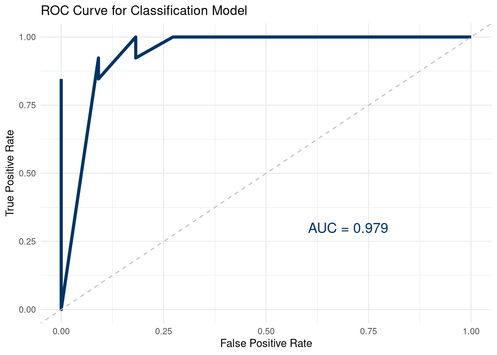
13.7 Decision Trees
Visual, interpretable models for classification:
library(rpart)
library(rpart.plot)
# Build decision tree
tree_model <- rpart(result ~ points_for + points_against + three_pt_pct + turnovers,
data = train_set,
method = "class",
control = rpart.control(cp = 0.01))
# Visualize tree
rpart.plot(tree_model, extra = 2, under = TRUE, faclen = 0,
main = "Decision Tree: Predicting Game Result")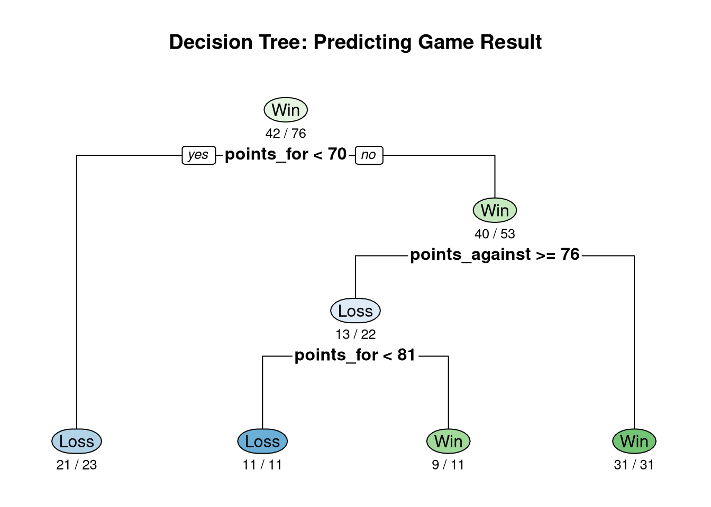
# Make predictions
tree_preds <- predict(tree_model, newdata = test_set, type = "class")
tree_preds <- factor(tree_preds, levels = c("Loss", "Win"))
# Evaluate
confusionMatrix(tree_preds, test_actual, positive = "Win")## Confusion Matrix and Statistics
##
## Reference
## Prediction Loss Win
## Loss 10 3
## Win 1 10
##
## Accuracy : 0.8333
## 95% CI : (0.6262, 0.9526)
## No Information Rate : 0.5417
## P-Value [Acc > NIR] : 0.002805
##
## Kappa : 0.669
##
## Mcnemar's Test P-Value : 0.617075
##
## Sensitivity : 0.7692
## Specificity : 0.9091
## Pos Pred Value : 0.9091
## Neg Pred Value : 0.7692
## Prevalence : 0.5417
## Detection Rate : 0.4167
## Detection Prevalence : 0.4583
## Balanced Accuracy : 0.8392
##
## 'Positive' Class : Win
## 13.7.1 Feature Importance
# Variable importance from tree
importance <- tree_model$variable.importance
importance_df <- data.frame(
variable = names(importance),
importance = importance
) %>%
arrange(desc(importance))
print(importance_df)## variable importance
## points_for points_for 23.301637
## points_against points_against 10.325121
## three_pt_pct three_pt_pct 3.233666
## turnovers turnovers 2.991148# Plot importance
ggplot(importance_df, aes(x = reorder(variable, importance), y = importance)) +
geom_col(fill = "#003366") +
coord_flip() +
labs(
title = "Feature Importance: Decision Tree",
x = NULL,
y = "Importance"
) +
theme_minimal()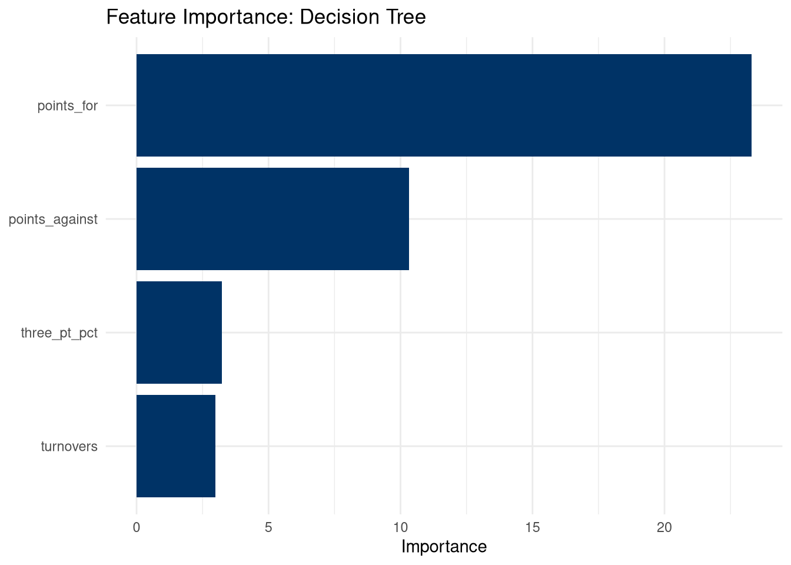
13.8 Cross-Validation
More robust than single train/test split:
13.8.1 K-Fold Cross-Validation
# 10-fold cross-validation
set.seed(789)
train_control <- trainControl(
method = "cv",
number = 10,
classProbs = TRUE,
summaryFunction = twoClassSummary
)
# Train logistic regression with CV
cv_log_model <- train(
result ~ points_for + points_against + three_pt_pct + turnovers,
data = games,
method = "glm",
family = binomial,
trControl = train_control,
metric = "ROC"
)
print(cv_log_model)## Generalized Linear Model
##
## 100 samples
## 4 predictor
## 2 classes: 'Loss', 'Win'
##
## No pre-processing
## Resampling: Cross-Validated (10 fold)
## Summary of sample sizes: 90, 89, 90, 90, 90, 90, ...
## Resampling results:
##
## ROC Sens Spec
## 0.9573333 0.845 0.906666713.8.2 Repeated Cross-Validation
# 5-fold CV repeated 3 times
set.seed(321)
train_control_repeated <- trainControl(
method = "repeatedcv",
number = 5,
repeats = 3,
classProbs = TRUE,
summaryFunction = twoClassSummary
)
cv_repeated_model <- train(
result ~ points_for + points_against + three_pt_pct + turnovers,
data = games,
method = "glm",
family = binomial,
trControl = train_control_repeated,
metric = "ROC"
)
print(cv_repeated_model)## Generalized Linear Model
##
## 100 samples
## 4 predictor
## 2 classes: 'Loss', 'Win'
##
## No pre-processing
## Resampling: Cross-Validated (5 fold, repeated 3 times)
## Summary of sample sizes: 80, 80, 80, 80, 80, 80, ...
## Resampling results:
##
## ROC Sens Spec
## 0.959596 0.8518519 0.915151513.9 Regression Model Evaluation
For predicting numeric outcomes:
13.9.1 Creating Regression Data
# Predict attendance based on team performance
set.seed(2024)
attendance_data <- data.frame(
wins = sample(10:25, 50, replace = TRUE),
avg_points = round(rnorm(50, 75, 10), 1),
star_player_games = sample(15:30, 50, replace = TRUE),
weekend_games = sample(5:15, 50, replace = TRUE),
ticket_price = round(runif(50, 15, 40), 2)
)
# Realistic attendance model
attendance_data$attendance <- round(
2000 +
50 * attendance_data$wins +
20 * attendance_data$avg_points +
30 * attendance_data$star_player_games +
100 * attendance_data$weekend_games -
25 * attendance_data$ticket_price +
rnorm(50, 0, 500)
)
# Split data
set.seed(123)
train_idx <- createDataPartition(attendance_data$attendance, p = 0.75, list = FALSE)
attend_train <- attendance_data[train_idx, ]
attend_test <- attendance_data[-train_idx, ]13.9.2 Building and Evaluating Regression Model
# Build linear regression
attend_model <- lm(attendance ~ ., data = attend_train)
summary(attend_model)##
## Call:
## lm(formula = attendance ~ ., data = attend_train)
##
## Residuals:
## Min 1Q Median 3Q Max
## -957.60 -306.83 47.05 280.18 680.31
##
## Coefficients:
## Estimate Std. Error t value Pr(>|t|)
## (Intercept) 4156.490 761.743 5.457 4.79e-06 ***
## wins 42.756 16.421 2.604 0.01371 *
## avg_points 6.735 7.272 0.926 0.36112
## star_player_games 3.284 14.550 0.226 0.82285
## weekend_games 77.009 22.895 3.364 0.00196 **
## ticket_price -31.550 8.743 -3.609 0.00101 **
## ---
## Signif. codes: 0 '***' 0.001 '**' 0.01 '*' 0.05 '.' 0.1 ' ' 1
##
## Residual standard error: 433.5 on 33 degrees of freedom
## Multiple R-squared: 0.4997, Adjusted R-squared: 0.4239
## F-statistic: 6.592 on 5 and 33 DF, p-value: 0.0002355# Predictions on test set
attend_preds <- predict(attend_model, newdata = attend_test)
# Calculate regression metrics
actual <- attend_test$attendance
predicted <- attend_preds
# Mean Absolute Error (MAE)
mae <- mean(abs(actual - predicted))
# Root Mean Squared Error (RMSE)
rmse <- sqrt(mean((actual - predicted)^2))
# R-squared on test set
ss_res <- sum((actual - predicted)^2)
ss_tot <- sum((actual - mean(actual))^2)
r_squared_test <- 1 - (ss_res / ss_tot)
cat("Test Set Performance:\n")## Test Set Performance:## MAE: 588 fans## RMSE: 671 fans## R-squared: 0.131# Visualize predictions
pred_df <- data.frame(Actual = actual, Predicted = predicted)
ggplot(pred_df, aes(x = Actual, y = Predicted)) +
geom_point(size = 3, alpha = 0.6, color = "#003366") +
geom_abline(slope = 1, intercept = 0, color = "#CC0000", size = 1.2) +
labs(
title = "Predicted vs. Actual Attendance",
subtitle = paste0("Test Set R² = ", round(r_squared_test, 3)),
x = "Actual Attendance",
y = "Predicted Attendance"
) +
theme_minimal()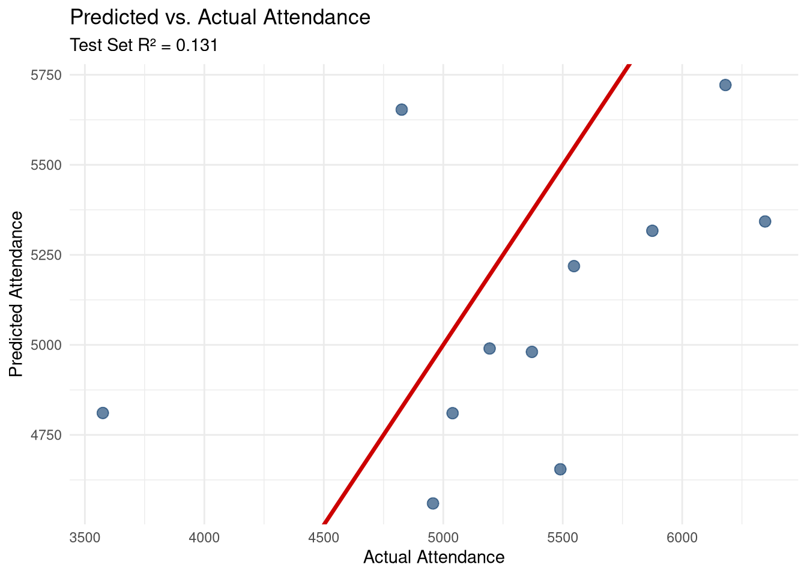
13.10 Overfitting and Underfitting
Critical concept: Models must generalize to new data!
13.10.1 Demonstrating Overfitting
# Create small dataset
set.seed(999)
small_data <- data.frame(
x = 1:10,
y = c(2, 4, 5, 4, 6, 8, 7, 9, 10, 9)
)
# Underfit: linear (too simple)
underfit <- lm(y ~ x, data = small_data)
# Good fit: quadratic
goodfit <- lm(y ~ poly(x, 2, raw = TRUE), data = small_data)
# Overfit: 9th degree polynomial (too complex!)
overfit <- lm(y ~ poly(x, 9, raw = TRUE), data = small_data)
# Create prediction data
pred_range <- data.frame(x = seq(1, 10, length.out = 100))
# Predictions
pred_range$underfit <- predict(underfit, newdata = pred_range)
pred_range$goodfit <- predict(goodfit, newdata = pred_range)
pred_range$overfit <- predict(overfit, newdata = pred_range)
# Plot
library(tidyr)
pred_long <- pred_range %>%
pivot_longer(cols = c(underfit, goodfit, overfit),
names_to = "model", values_to = "prediction")
ggplot() +
geom_point(data = small_data, aes(x = x, y = y), size = 4, color = "black") +
geom_line(data = pred_long, aes(x = x, y = prediction, color = model), size = 1.2) +
scale_color_manual(
values = c("underfit" = "#CC0000", "goodfit" = "#003366", "overfit" = "#CC6600"),
labels = c("Underfit (Linear)", "Good Fit (Quadratic)", "Overfit (9th degree)")
) +
labs(
title = "Overfitting vs. Underfitting",
subtitle = "Overfit model fits training data perfectly but won't generalize",
x = "X",
y = "Y",
color = "Model"
) +
theme_minimal() +
theme(legend.position = "top")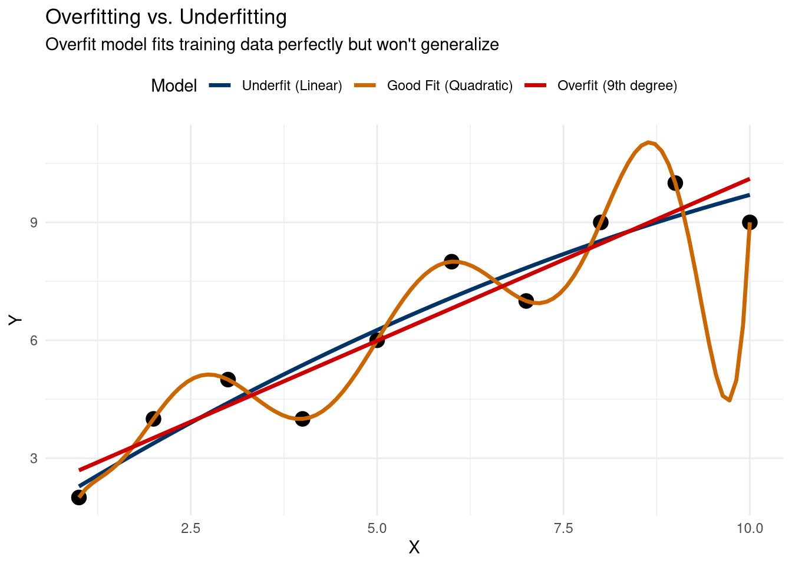
## Training R-squared:## Underfit: 0.898## Good fit: 0.908## Overfit: 113.10.2 Preventing Overfitting
# 1. Use cross-validation instead of single train/test
# 2. Keep models simple (fewer predictors)
# 3. Regularization (Ridge, Lasso)
# 4. More data
# 5. Early stopping for iterative algorithms
# Example: Lasso regression (penalizes complex models)
library(glmnet)
# Prepare data for glmnet
x_matrix <- model.matrix(attendance ~ . - 1, data = attend_train)
y_vector <- attend_train$attendance
# Cross-validated Lasso
cv_lasso <- cv.glmnet(x_matrix, y_vector, alpha = 1)
plot(cv_lasso, main = "Lasso Cross-Validation")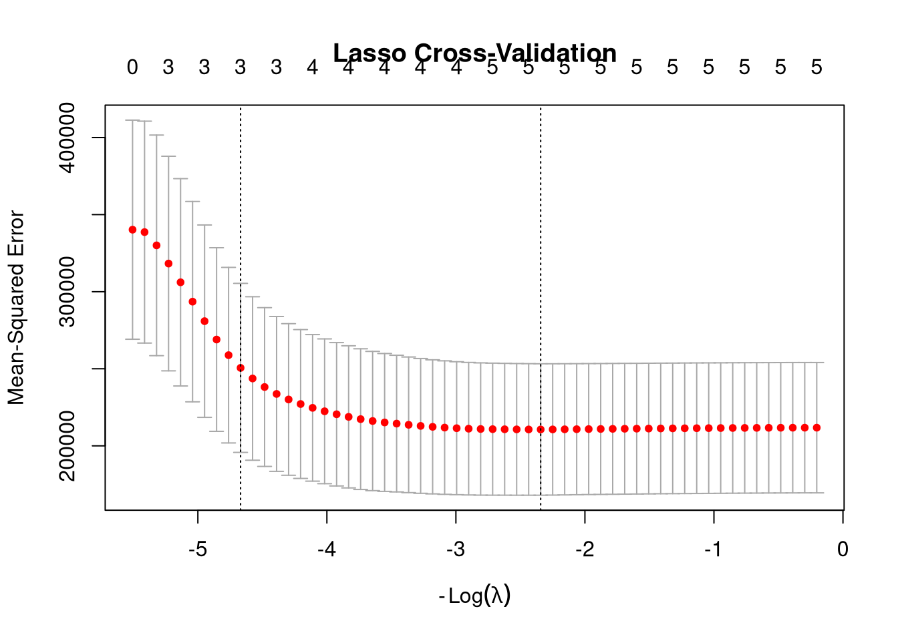
## Optimal lambda: 10.41191## 6 x 1 sparse Matrix of class "dgCMatrix"
## lambda.min
## (Intercept) 4320.098041
## wins 40.512063
## avg_points 5.729824
## star_player_games 1.049951
## weekend_games 73.497029
## ticket_price -30.22555913.11 Comparing Multiple Models
Systematic comparison across different algorithms:
# Set up cross-validation
set.seed(2024)
cv_control <- trainControl(
method = "cv",
number = 10,
classProbs = TRUE,
summaryFunction = twoClassSummary,
savePredictions = TRUE
)
# Train multiple models
models_list <- list()
# 1. Logistic Regression
models_list$Logistic <- train(
result ~ points_for + points_against + three_pt_pct + turnovers,
data = games,
method = "glm",
family = binomial,
trControl = cv_control,
metric = "ROC"
)
# 2. Decision Tree
models_list$Tree <- train(
result ~ points_for + points_against + three_pt_pct + turnovers,
data = games,
method = "rpart",
trControl = cv_control,
metric = "ROC"
)
# 3. k-Nearest Neighbors
models_list$KNN <- train(
result ~ points_for + points_against + three_pt_pct + turnovers,
data = games,
method = "knn",
trControl = cv_control,
metric = "ROC",
tuneLength = 5
)
# Compare results
results <- resamples(models_list)
summary(results)##
## Call:
## summary.resamples(object = results)
##
## Models: Logistic, Tree, KNN
## Number of resamples: 10
##
## ROC
## Min. 1st Qu. Median Mean 3rd Qu. Max. NA's
## Logistic 0.9000000 0.9666667 1.0000000 0.9733333 1.00000 1 0
## Tree 0.6333333 0.8000000 0.8425000 0.8430833 0.93125 1 0
## KNN 0.8000000 0.8625000 0.9491667 0.9281667 1.00000 1 0
##
## Sens
## Min. 1st Qu. Median Mean 3rd Qu. Max. NA's
## Logistic 0.40 0.8000 0.9 0.855 1 1 0
## Tree 0.75 0.7625 1.0 0.905 1 1 0
## KNN 0.75 0.8000 0.9 0.890 1 1 0
##
## Spec
## Min. 1st Qu. Median Mean 3rd Qu. Max. NA's
## Logistic 0.6666667 0.8000000 1.0 0.9066667 1.0000000 1 0
## Tree 0.3333333 0.6166667 0.8 0.7533333 0.9583333 1 0
## KNN 0.6000000 0.8083333 1.0 0.9033333 1.0000000 1 0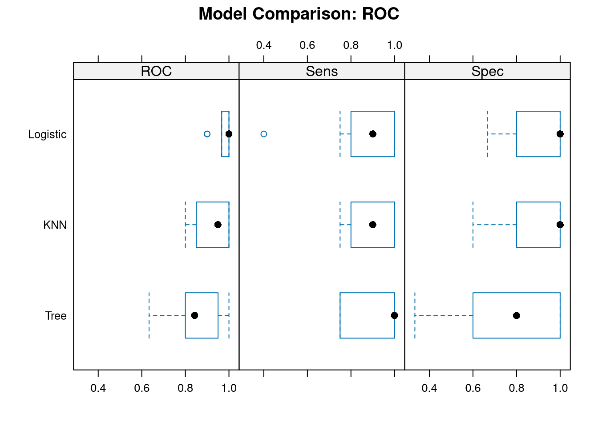
##
## Call:
## summary.diff.resamples(object = model_diff)
##
## p-value adjustment: bonferroni
## Upper diagonal: estimates of the difference
## Lower diagonal: p-value for H0: difference = 0
##
## ROC
## Logistic Tree KNN
## Logistic 0.13025 0.04517
## Tree 0.04214 -0.08508
## KNN 0.30371 0.17350
##
## Sens
## Logistic Tree KNN
## Logistic -0.050 -0.035
## Tree 1 0.015
## KNN 1 1
##
## Spec
## Logistic Tree KNN
## Logistic 0.153333 0.003333
## Tree 0.3182 -0.150000
## KNN 1.0000 0.259613.12 Time Series Forecasting Basics
Predicting future values based on historical patterns:
13.12.1 Creating Time Series Data
# Season attendance over time
set.seed(2024)
season_attendance <- data.frame(
game = 1:30,
attendance = round(5000 + 20 * (1:30) + rnorm(30, 0, 400))
)
# Add trend and some seasonality
season_attendance$attendance <- season_attendance$attendance +
500 * sin(2 * pi * season_attendance$game / 30)
# Plot time series
ggplot(season_attendance, aes(x = game, y = attendance)) +
geom_line(color = "#003366", size = 1.2) +
geom_point(size = 3, color = "#003366") +
labs(
title = "Season Attendance Over Time",
x = "Game Number",
y = "Attendance"
) +
theme_minimal()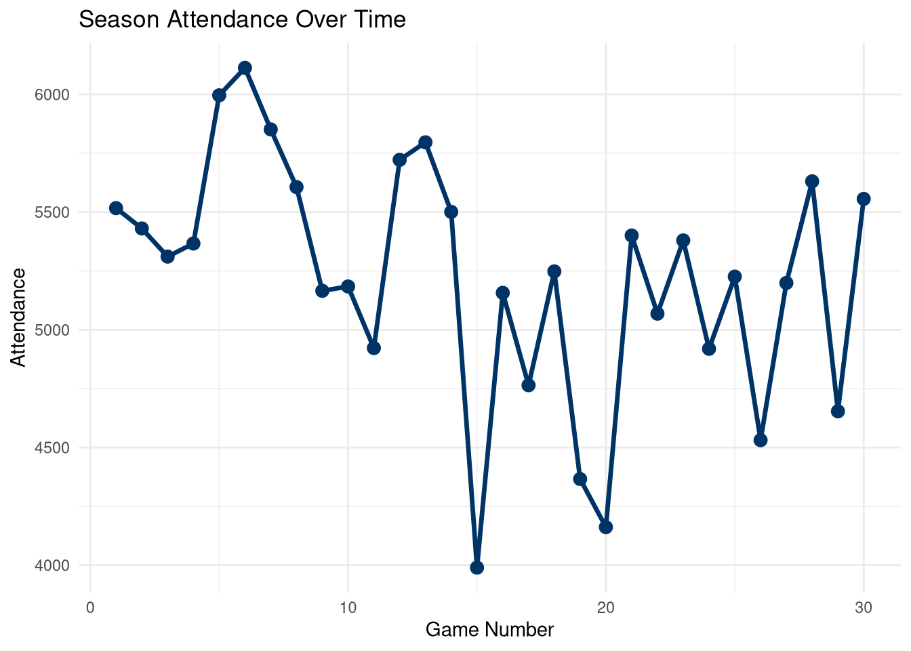
13.12.2 Simple Forecasting Methods
# Split into train/test (time-based)
train_ts <- season_attendance[1:24, ]
test_ts <- season_attendance[25:30, ]
# Method 1: Linear trend
trend_model <- lm(attendance ~ game, data = train_ts)
trend_pred <- predict(trend_model, newdata = test_ts)
# Method 2: Moving average
ma_window <- 5
ma_pred <- rep(NA, nrow(test_ts))
for (i in 1:length(ma_pred)) {
recent_games <- (24 - ma_window + 1):24
ma_pred[i] <- mean(train_ts$attendance[recent_games])
}
# Method 3: Exponential smoothing
library(forecast)
ts_data <- ts(train_ts$attendance)
ets_model <- ets(ts_data)
ets_pred <- forecast(ets_model, h = 6)
# Compare predictions
forecast_comparison <- data.frame(
game = test_ts$game,
actual = test_ts$attendance,
trend = trend_pred,
moving_avg = ma_pred,
exp_smooth = as.numeric(ets_pred$mean)
)
print(forecast_comparison)## game actual trend moving_avg exp_smooth
## 25 25 5225.987 4772.076 4986.082 5016.187
## 26 26 4531.428 4734.046 4986.082 5016.187
## 27 27 5199.107 4696.016 4986.082 5016.187
## 28 28 5630.632 4657.986 4986.082 5016.187
## 29 29 4654.044 4619.956 4986.082 5016.187
## 30 30 5556.000 4581.926 4986.082 5016.187# Calculate RMSE for each method
rmse_trend <- sqrt(mean((forecast_comparison$actual - forecast_comparison$trend)^2))
rmse_ma <- sqrt(mean((forecast_comparison$actual - forecast_comparison$moving_avg)^2))
rmse_ets <- sqrt(mean((forecast_comparison$actual - forecast_comparison$exp_smooth)^2))
cat("\nForecast RMSE:\n")##
## Forecast RMSE:## Linear Trend: 632## Moving Average: 440## Exponential Smoothing: 43113.13 Sport Analytics Case Study: Win Prediction
Complete workflow for predicting game outcomes:
# Create comprehensive game data
set.seed(2024)
full_games <- data.frame(
home_team_wins = sample(10:25, 200, replace = TRUE),
away_team_wins = sample(10:25, 200, replace = TRUE),
home_avg_points = round(rnorm(200, 75, 8), 1),
away_avg_points = round(rnorm(200, 73, 8), 1),
home_days_rest = sample(1:5, 200, replace = TRUE),
away_days_rest = sample(1:5, 200, replace = TRUE),
rivalry_game = sample(c(0, 1), 200, replace = TRUE, prob = c(0.8, 0.2))
)
# Create realistic outcome
full_games$home_win_prob <- plogis(
-2 +
0.08 * full_games$home_team_wins -
0.06 * full_games$away_team_wins +
0.04 * full_games$home_avg_points -
0.03 * full_games$away_avg_points +
0.15 * full_games$home_days_rest +
0.3 * full_games$rivalry_game
)
full_games$result <- ifelse(
runif(200) < full_games$home_win_prob,
"Home Win",
"Away Win"
)
# Convert to factor for modeling
full_games$result <- factor(full_games$result, levels = c("Away Win", "Home Win"))
# Remove the probability (wouldn't have this in real prediction)
full_games <- full_games %>% dplyr::select(-home_win_prob)
table(full_games$result)##
## Away Win Home Win
## 114 86# Split data
set.seed(123)
train_idx <- createDataPartition(full_games$result, p = 0.8, list = FALSE)
train_games <- full_games[train_idx, ]
test_games <- full_games[-train_idx, ]
# Build final model
final_model <- glm(
result ~ home_team_wins + away_team_wins + home_avg_points +
away_avg_points + home_days_rest + away_days_rest + rivalry_game,
data = train_games,
family = binomial
)
summary(final_model)##
## Call:
## glm(formula = result ~ home_team_wins + away_team_wins + home_avg_points +
## away_avg_points + home_days_rest + away_days_rest + rivalry_game,
## family = binomial, data = train_games)
##
## Coefficients:
## Estimate Std. Error z value Pr(>|z|)
## (Intercept) -3.87663 2.69112 -1.441 0.14972
## home_team_wins 0.11202 0.03832 2.924 0.00346 **
## away_team_wins -0.09741 0.03848 -2.532 0.01135 *
## home_avg_points 0.06013 0.02456 2.449 0.01434 *
## away_avg_points -0.01609 0.02276 -0.707 0.47964
## home_days_rest 0.06572 0.12109 0.543 0.58733
## away_days_rest -0.09579 0.13184 -0.727 0.46750
## rivalry_game 0.12334 0.47990 0.257 0.79717
## ---
## Signif. codes: 0 '***' 0.001 '**' 0.01 '*' 0.05 '.' 0.1 ' ' 1
##
## (Dispersion parameter for binomial family taken to be 1)
##
## Null deviance: 219.90 on 160 degrees of freedom
## Residual deviance: 193.56 on 153 degrees of freedom
## AIC: 209.56
##
## Number of Fisher Scoring iterations: 4# Predictions
test_probs_final <- predict(final_model, newdata = test_games, type = "response")
test_preds_final <- ifelse(test_probs_final > 0.5, "Home Win", "Away Win")
test_preds_final <- factor(test_preds_final, levels = c("Away Win", "Home Win"))
test_actual_final <- factor(test_games$result, levels = c("Away Win", "Home Win"))
# Final evaluation
final_conf <- confusionMatrix(test_preds_final, test_actual_final, positive = "Home Win")
print(final_conf)## Confusion Matrix and Statistics
##
## Reference
## Prediction Away Win Home Win
## Away Win 17 8
## Home Win 5 9
##
## Accuracy : 0.6667
## 95% CI : (0.4978, 0.8091)
## No Information Rate : 0.5641
## P-Value [Acc > NIR] : 0.1286
##
## Kappa : 0.3083
##
## Mcnemar's Test P-Value : 0.5791
##
## Sensitivity : 0.5294
## Specificity : 0.7727
## Pos Pred Value : 0.6429
## Neg Pred Value : 0.6800
## Prevalence : 0.4359
## Detection Rate : 0.2308
## Detection Prevalence : 0.3590
## Balanced Accuracy : 0.6511
##
## 'Positive' Class : Home Win
## ##
## === Model Performance Summary ===## Accuracy: 0.667## Sensitivity (recall): 0.529## Specificity: 0.77313.14 AI-Enhanced Predictive Analytics
13.14.1 Using AI for Model Selection
# Example prompts for ChatGPT/Claude:
# 1. Problem formulation
"I want to predict whether a basketball team will make the playoffs.
I have: wins, losses, points per game, points allowed, injuries.
Should I use classification or regression? What algorithm should I try first?"
# 2. Feature engineering
"I'm predicting game attendance. I have: opponent quality, day of week, weather.
What additional features should I create? Should I include interactions?"
# 3. Evaluation metrics
"I'm predicting injury risk (rare event, 5% of players).
Accuracy is 95% but I want better predictions. What metrics should I use instead?"
# 4. Overfitting diagnosis
"My training accuracy is 98% but test accuracy is 72%.
I have 50 observations and 8 predictors. What's wrong and how do I fix it?"
# 5. Code assistance
"Write R code using caret to compare logistic regression, random forest,
and SVM for binary classification with 10-fold cross-validation."13.14.2 AI Workflow for Predictive Modeling
Step 1: Problem Definition - Describe your goal and ask AI to recommend approach - Get suggestions for relevant features
Step 2: Data Preparation - Ask for feature engineering ideas - Get code for train/test split and scaling
Step 3: Model Building - Request algorithm recommendations - Get starter code for multiple models
Step 4: Evaluation - Ask AI to interpret metrics - Get visualization code for diagnostics
Step 5: Deployment - Request code for making predictions on new data - Get monitoring suggestions
13.15 Best Practices
13.15.1 DO:
- ✅ Always use separate test data for final evaluation
- ✅ Use cross-validation for model selection
- ✅ Choose metrics appropriate for your problem
- ✅ Check for data leakage (future info in features)
- ✅ Validate assumptions (linearity, independence, etc.)
- ✅ Document your entire workflow
- ✅ Monitor model performance over time
13.16 Chapter Summary
In this chapter, you learned:
- Predictive Workflow: Define, split, train, evaluate, deploy
- Train/Test Split: Evaluate on unseen data
- Cross-Validation: Robust model evaluation
- Classification: Logistic regression, decision trees, evaluation metrics
- Regression Prediction: Forecasting numeric outcomes
- Model Comparison: Systematic comparison of algorithms
- Overfitting: Recognizing and preventing it
- Time Series: Basics of forecasting
- Sport Applications: Win prediction, attendance forecasting
- AI Integration: Using AI to enhance predictive modeling
13.17 Exercises
13.17.1 Exercise 1: Classification Model
Task: Build a logistic regression model to predict whether a player scores > 20 points per game based on: minutes played, field goal %, 3-point %, and free throw %.
Requirements: - Create sample data for 100 players - 75/25 train/test split - Build logistic regression - Report accuracy, precision, recall - Create confusion matrix
13.17.2 Exercise 2: Model Comparison
Task: Compare 3 different classification algorithms (logistic regression, decision tree, k-NN) using 10-fold cross-validation.
Requirements: - Use the same data from Exercise 1 - Use caret with cross-validation - Compare ROC curves - Identify which model performs best - Explain why you chose that model
13.17.3 Exercise 3: Regression Prediction
Task: Build a model to predict team wins based on: points per game, points allowed, turnover differential, and 3-point %.
Requirements: - Create sample data for 50 teams - 80/20 split - Build linear regression - Calculate RMSE and MAE on test set - Create predicted vs. actual plot
13.17.4 Exercise 4: Overfitting Investigation
Task: Demonstrate overfitting by building models with increasing complexity on a small dataset.
Requirements: - Create dataset with 15 observations - Build 3 models: linear, quadratic, 10th degree polynomial - Compare training vs. test R-squared - Visualize all three fits - Explain which model is best and why
13.17.5 Exercise 5: Time Series Forecast
Task: Forecast next 5 games’ attendance using historical data.
Requirements: - Create 25 games of attendance data with trend - Use games 1-20 for training - Forecast games 21-25 - Try 2 different methods - Calculate RMSE for each method - Visualize forecasts vs. actual
13.18 Exercise Solutions
13.18.1 Solution 1: Classification Model
# Create player data
set.seed(2024)
players_ex1 <- data.frame(
player = paste0("Player_", 1:100),
minutes_per_game = round(rnorm(100, 25, 8), 1),
field_goal_pct = round(rnorm(100, 45, 8), 1),
three_point_pct = round(rnorm(100, 35, 7), 1),
free_throw_pct = round(rnorm(100, 75, 10), 1)
)
# Create realistic outcome: higher minutes and shooting = more points
players_ex1$high_scorer_prob <- plogis(
-8 +
0.15 * players_ex1$minutes_per_game +
0.08 * players_ex1$field_goal_pct +
0.05 * players_ex1$three_point_pct +
0.03 * players_ex1$free_throw_pct
)
players_ex1$high_scorer <- ifelse(
runif(100) < players_ex1$high_scorer_prob,
"Yes",
"No"
)
# Convert to factor for modeling
players_ex1$high_scorer <- factor(players_ex1$high_scorer, levels = c("No", "Yes"))
# Remove probability column
players_ex1 <- players_ex1 %>% dplyr::select(-high_scorer_prob)
table(players_ex1$high_scorer)##
## No Yes
## 3 97# 75/25 split
set.seed(123)
train_idx <- createDataPartition(players_ex1$high_scorer, p = 0.75, list = FALSE)
train_players <- players_ex1[train_idx, ]
test_players <- players_ex1[-train_idx, ]
# Build logistic regression
scorer_model <- glm(
high_scorer ~ minutes_per_game + field_goal_pct + three_point_pct + free_throw_pct,
data = train_players,
family = binomial
)
summary(scorer_model)##
## Call:
## glm(formula = high_scorer ~ minutes_per_game + field_goal_pct +
## three_point_pct + free_throw_pct, family = binomial, data = train_players)
##
## Coefficients:
## Estimate Std. Error z value Pr(>|z|)
## (Intercept) -28.82950 17.66648 -1.632 0.103
## minutes_per_game 0.43262 0.27979 1.546 0.122
## field_goal_pct 0.03189 0.10920 0.292 0.770
## three_point_pct 0.25448 0.20278 1.255 0.210
## free_throw_pct 0.21067 0.16513 1.276 0.202
##
## (Dispersion parameter for binomial family taken to be 1)
##
## Null deviance: 25.2727 on 75 degrees of freedom
## Residual deviance: 9.0025 on 71 degrees of freedom
## AIC: 19.002
##
## Number of Fisher Scoring iterations: 10# Predictions
test_probs <- predict(scorer_model, newdata = test_players, type = "response")
test_preds <- ifelse(test_probs > 0.5, "Yes", "No")
test_preds <- factor(test_preds, levels = c("No", "Yes"))
test_actual <- factor(test_players$high_scorer, levels = c("No", "Yes"))
# Confusion matrix
conf_mat <- confusionMatrix(test_preds, test_actual, positive = "Yes")
print(conf_mat)## Confusion Matrix and Statistics
##
## Reference
## Prediction No Yes
## No 0 0
## Yes 0 24
##
## Accuracy : 1
## 95% CI : (0.8575, 1)
## No Information Rate : 1
## P-Value [Acc > NIR] : 1
##
## Kappa : NaN
##
## Mcnemar's Test P-Value : NA
##
## Sensitivity : 1
## Specificity : NA
## Pos Pred Value : NA
## Neg Pred Value : NA
## Prevalence : 1
## Detection Rate : 1
## Detection Prevalence : 1
## Balanced Accuracy : NA
##
## 'Positive' Class : Yes
## ##
## === Performance Metrics ===## Accuracy: 1## Precision: NA## Recall: 1## F1 Score: 113.18.2 Solution 2: Model Comparison
# Set up 10-fold cross-validation
set.seed(456)
cv_control <- trainControl(
method = "cv",
number = 10,
classProbs = TRUE,
summaryFunction = twoClassSummary,
savePredictions = TRUE
)
# Prepare data (combine train and test for CV)
all_players <- rbind(train_players, test_players)
# Train multiple models
models <- list()
# 1. Logistic Regression
models$Logistic <- train(
high_scorer ~ minutes_per_game + field_goal_pct + three_point_pct + free_throw_pct,
data = all_players,
method = "glm",
family = binomial,
trControl = cv_control,
metric = "ROC"
)
# 2. Decision Tree
models$Tree <- train(
high_scorer ~ minutes_per_game + field_goal_pct + three_point_pct + free_throw_pct,
data = all_players,
method = "rpart",
trControl = cv_control,
metric = "ROC"
)
# 3. k-Nearest Neighbors
models$KNN <- train(
high_scorer ~ minutes_per_game + field_goal_pct + three_point_pct + free_throw_pct,
data = all_players,
method = "knn",
trControl = cv_control,
metric = "ROC",
tuneLength = 5
)
# Compare results
results_ex2 <- resamples(models)
summary(results_ex2)##
## Call:
## summary.resamples(object = results_ex2)
##
## Models: Logistic, Tree, KNN
## Number of resamples: 10
##
## ROC
## Min. 1st Qu. Median Mean 3rd Qu. Max. NA's
## Logistic 0.5000000 0.7500000 1.00 0.8333333 1.0000000 1.0000000 7
## Tree 0.5000000 0.5000000 0.50 0.5000000 0.5000000 0.5000000 7
## KNN 0.4444444 0.4472222 0.45 0.6129630 0.6972222 0.9444444 7
##
## Sens
## Min. 1st Qu. Median Mean 3rd Qu. Max. NA's
## Logistic 0 0 0 0.3333333 0.5 1 7
## Tree 0 0 0 0.0000000 0.0 0 7
## KNN 0 0 0 0.0000000 0.0 0 7
##
## Spec
## Min. 1st Qu. Median Mean 3rd Qu. Max. NA's
## Logistic 1 1 1 1 1 1 0
## Tree 1 1 1 1 1 1 0
## KNN 1 1 1 1 1 1 0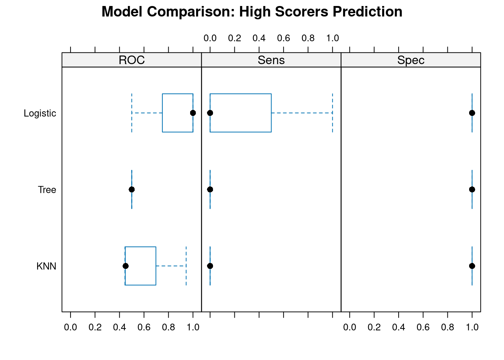
# Extract best model
best_model_name <- names(which.max(sapply(models, function(m) max(m$results$ROC))))
cat("\n=== Best Model ===\n")##
## === Best Model ===## Best performing model: Logistic## ROC: 0.833##
## Explanation: Logistic was chosen because it achieved the highest## cross-validated ROC score, indicating best ability to discriminate between## high scorers and others across different data subsets.13.18.3 Solution 3: Regression Prediction
# Create team data
set.seed(789)
teams_ex3 <- data.frame(
team = paste0("Team_", 1:50),
points_per_game = round(rnorm(50, 75, 10), 1),
points_allowed = round(rnorm(50, 75, 10), 1),
turnover_diff = round(rnorm(50, 0, 3), 1),
three_point_pct = round(rnorm(50, 35, 5), 1)
)
# Create realistic wins
teams_ex3$wins <- round(
15 +
0.3 * teams_ex3$points_per_game -
0.25 * teams_ex3$points_allowed +
0.8 * teams_ex3$turnover_diff +
0.15 * teams_ex3$three_point_pct +
rnorm(50, 0, 3)
)
teams_ex3$wins <- pmax(5, pmin(30, teams_ex3$wins)) # Bound between 5-30
# 80/20 split
set.seed(321)
train_idx <- createDataPartition(teams_ex3$wins, p = 0.8, list = FALSE)
train_teams <- teams_ex3[train_idx, ]
test_teams <- teams_ex3[-train_idx, ]
# Build regression model
wins_model <- lm(
wins ~ points_per_game + points_allowed + turnover_diff + three_point_pct,
data = train_teams
)
summary(wins_model)##
## Call:
## lm(formula = wins ~ points_per_game + points_allowed + turnover_diff +
## three_point_pct, data = train_teams)
##
## Residuals:
## Min 1Q Median 3Q Max
## -8.458 -1.889 0.108 2.006 5.324
##
## Coefficients:
## Estimate Std. Error t value Pr(>|t|)
## (Intercept) 15.73742 6.46193 2.435 0.019813 *
## points_per_game 0.28165 0.04845 5.813 1.12e-06 ***
## points_allowed -0.20931 0.05041 -4.152 0.000186 ***
## turnover_diff 0.68300 0.14534 4.699 3.56e-05 ***
## three_point_pct 0.05648 0.09214 0.613 0.543648
## ---
## Signif. codes: 0 '***' 0.001 '**' 0.01 '*' 0.05 '.' 0.1 ' ' 1
##
## Residual standard error: 3.005 on 37 degrees of freedom
## Multiple R-squared: 0.6547, Adjusted R-squared: 0.6174
## F-statistic: 17.54 on 4 and 37 DF, p-value: 3.754e-08# Predictions on test set
test_preds_wins <- predict(wins_model, newdata = test_teams)
# Calculate metrics
actual_wins <- test_teams$wins
predicted_wins <- test_preds_wins
rmse <- sqrt(mean((actual_wins - predicted_wins)^2))
mae <- mean(abs(actual_wins - predicted_wins))
cat("\n=== Test Set Performance ===\n")##
## === Test Set Performance ===## RMSE: 2.81 wins## MAE: 2.26 wins# Predicted vs. Actual plot
pred_df_ex3 <- data.frame(
Actual = actual_wins,
Predicted = predicted_wins
)
ggplot(pred_df_ex3, aes(x = Actual, y = Predicted)) +
geom_point(size = 3, alpha = 0.7, color = "#003366") +
geom_abline(slope = 1, intercept = 0, color = "#CC0000", size = 1.2, linetype = "dashed") +
labs(
title = "Predicted vs. Actual Wins",
subtitle = paste0("RMSE = ", round(rmse, 2), ", MAE = ", round(mae, 2)),
x = "Actual Wins",
y = "Predicted Wins"
) +
theme_minimal()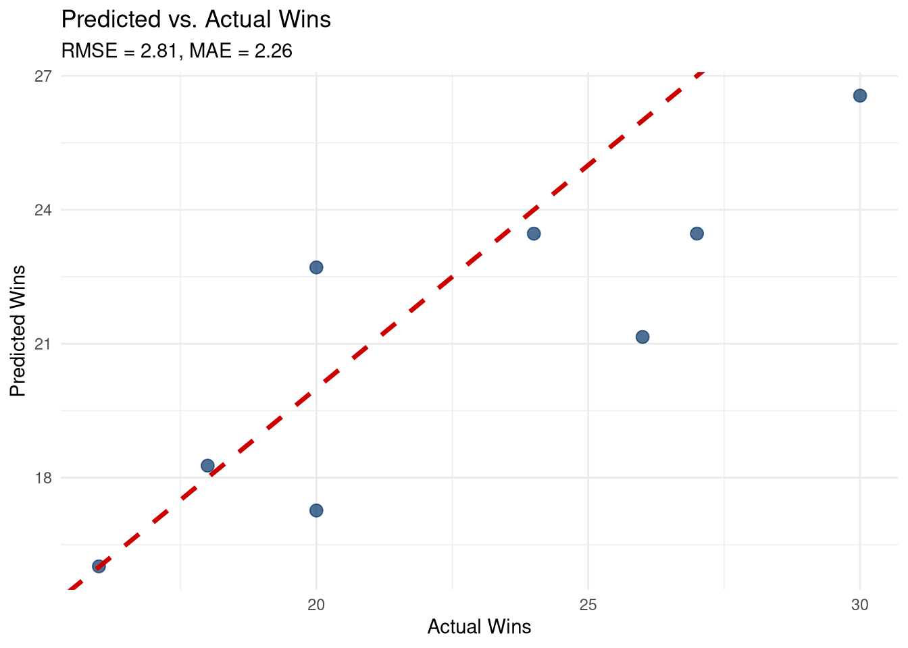
13.18.4 Solution 4: Overfitting Investigation
# Create small dataset
set.seed(999)
small_data_ex4 <- data.frame(
x = 1:15,
y = 5 + 2 * (1:15) + rnorm(15, 0, 3)
)
# Split into train/test
train_small <- small_data_ex4[1:10, ]
test_small <- small_data_ex4[11:15, ]
# Build three models
model_linear <- lm(y ~ x, data = train_small)
model_quad <- lm(y ~ poly(x, 2, raw = TRUE), data = train_small)
model_complex <- lm(y ~ poly(x, 10, raw = TRUE), data = train_small)
# Training R-squared
train_r2_linear <- summary(model_linear)$r.squared
train_r2_quad <- summary(model_quad)$r.squared
train_r2_complex <- summary(model_complex)$r.squared
# Test R-squared
test_pred_linear <- predict(model_linear, newdata = test_small)
test_pred_quad <- predict(model_quad, newdata = test_small)
test_pred_complex <- predict(model_complex, newdata = test_small)
ss_res_linear <- sum((test_small$y - test_pred_linear)^2)
ss_res_quad <- sum((test_small$y - test_pred_quad)^2)
ss_res_complex <- sum((test_small$y - test_pred_complex)^2)
ss_tot_test <- sum((test_small$y - mean(test_small$y))^2)
test_r2_linear <- 1 - (ss_res_linear / ss_tot_test)
test_r2_quad <- 1 - (ss_res_quad / ss_tot_test)
test_r2_complex <- 1 - (ss_res_complex / ss_tot_test)
# Compare
comparison_df <- data.frame(
Model = c("Linear", "Quadratic", "10th Degree"),
Train_R2 = c(train_r2_linear, train_r2_quad, train_r2_complex),
Test_R2 = c(test_r2_linear, test_r2_quad, test_r2_complex)
)
print(comparison_df)## Model Train_R2 Test_R2
## 1 Linear 0.8422749 -5.331583e+00
## 2 Quadratic 0.8473388 -1.045071e+01
## 3 10th Degree 1.0000000 -1.868192e+09# Visualize all fits
pred_range_ex4 <- data.frame(x = seq(1, 15, length.out = 100))
pred_range_ex4$linear <- predict(model_linear, newdata = pred_range_ex4)
pred_range_ex4$quad <- predict(model_quad, newdata = pred_range_ex4)
pred_range_ex4$complex <- predict(model_complex, newdata = pred_range_ex4)
pred_long_ex4 <- pred_range_ex4 %>%
pivot_longer(cols = c(linear, quad, complex), names_to = "model", values_to = "prediction")
ggplot() +
geom_point(data = train_small, aes(x = x, y = y), size = 4, color = "black") +
geom_point(data = test_small, aes(x = x, y = y), size = 4, color = "red", shape = 17) +
geom_line(data = pred_long_ex4, aes(x = x, y = prediction, color = model), size = 1.2) +
scale_color_manual(
values = c("linear" = "#003366", "quad" = "#00AA00", "complex" = "#CC0000"),
labels = c("Linear", "Quadratic", "10th Degree (OVERFIT)")
) +
labs(
title = "Overfitting Demonstration",
subtitle = "Red triangles = test data (not used in training)",
x = "X",
y = "Y",
color = "Model"
) +
theme_minimal() +
theme(legend.position = "top")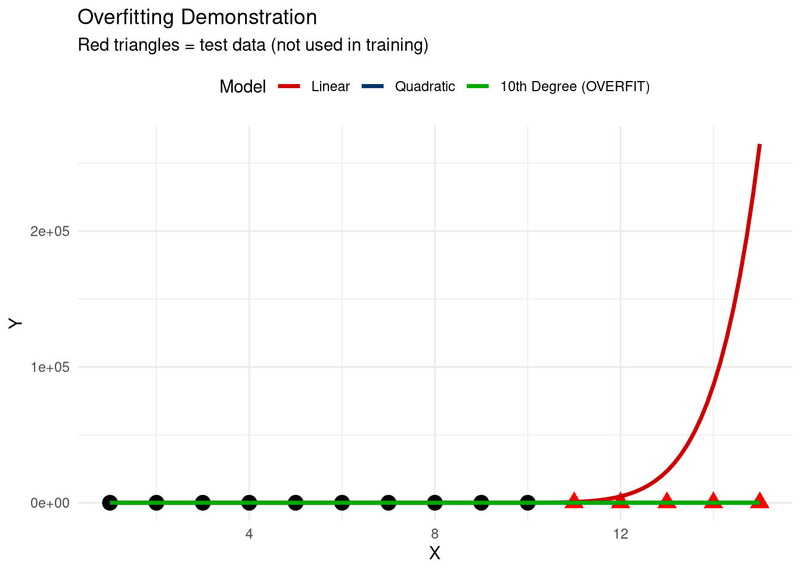
##
## === Conclusion ===## Best model: Linear or Quadratic## The 10th degree polynomial has highest training R² but NEGATIVE test R²,## showing severe overfitting. It memorized training data but fails on new data.## The quadratic model balances fit and generalization.13.18.5 Solution 5: Time Series Forecast
# Create attendance time series
set.seed(2024)
games_ts_ex5 <- data.frame(
game = 1:25,
attendance = 4000 + 100 * (1:25) + rnorm(25, 0, 300)
)
# Split: train on 1-20, test on 21-25
train_ts_ex5 <- games_ts_ex5[1:20, ]
test_ts_ex5 <- games_ts_ex5[21:25, ]
# Method 1: Linear trend
trend_model_ex5 <- lm(attendance ~ game, data = train_ts_ex5)
forecast_trend <- predict(trend_model_ex5, newdata = test_ts_ex5)
# Method 2: Exponential smoothing
ts_train <- ts(train_ts_ex5$attendance)
ets_model_ex5 <- ets(ts_train)
forecast_ets <- forecast(ets_model_ex5, h = 5)
# Combine forecasts
forecast_results <- data.frame(
game = test_ts_ex5$game,
actual = test_ts_ex5$attendance,
linear_trend = forecast_trend,
exp_smoothing = as.numeric(forecast_ets$mean)
)
print(forecast_results)## game actual linear_trend exp_smoothing
## 21 21 6441.993 5677.086 5635.049
## 22 22 6294.711 5745.311 5696.556
## 23 23 6612.806 5813.536 5758.062
## 24 24 6336.105 5881.761 5819.568
## 25 25 6619.130 5949.986 5881.074# Calculate RMSE
rmse_trend_ex5 <- sqrt(mean((forecast_results$actual - forecast_results$linear_trend)^2))
rmse_ets_ex5 <- sqrt(mean((forecast_results$actual - forecast_results$exp_smoothing)^2))
cat("\n=== Forecast Performance ===\n")##
## === Forecast Performance ===## Linear Trend RMSE: 660## Exponential Smoothing RMSE: 714# Visualize forecasts
ggplot() +
geom_line(data = train_ts_ex5, aes(x = game, y = attendance),
color = "black", size = 1.2) +
geom_point(data = train_ts_ex5, aes(x = game, y = attendance),
size = 3, color = "black") +
geom_point(data = test_ts_ex5, aes(x = game, y = attendance),
size = 4, color = "red", shape = 17) +
geom_line(data = forecast_results, aes(x = game, y = linear_trend, color = "Linear Trend"),
size = 1.2, linetype = "dashed") +
geom_line(data = forecast_results, aes(x = game, y = exp_smoothing, color = "Exp Smoothing"),
size = 1.2, linetype = "dashed") +
scale_color_manual(values = c("Linear Trend" = "#003366", "Exp Smoothing" = "#CC6600")) +
labs(
title = "Attendance Forecast: Games 21-25",
subtitle = "Red triangles = actual future values",
x = "Game Number",
y = "Attendance",
color = "Forecast Method"
) +
theme_minimal() +
theme(legend.position = "top")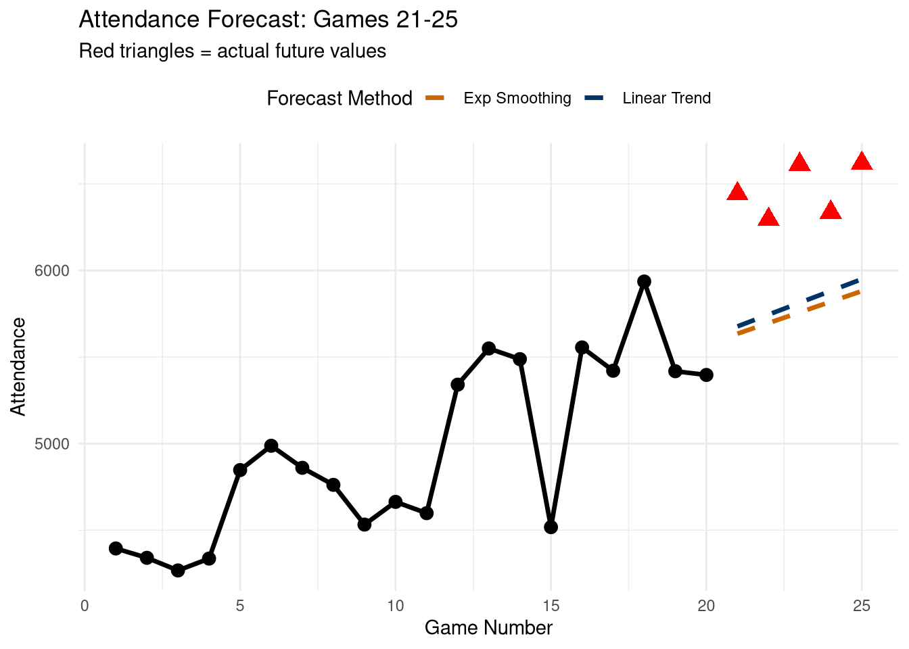
cat("\nBetter method:", ifelse(rmse_trend_ex5 < rmse_ets_ex5, "Linear Trend", "Exponential Smoothing"), "\n")##
## Better method: Linear Trend13.19 AI Integration Checkpoint
Before moving to the next chapter, reflect on predictive modeling:
- What was most challenging about train/test splits?
- How did cross-validation improve your confidence in models?
- What metrics are most important for your sport analytics goals?
- How would you explain overfitting to a coach or GM?
Document your insights for future reference.
Next Chapter: We’ll explore real-world case studies applying everything you’ve learned to complete sport analytics projects from start to finish.